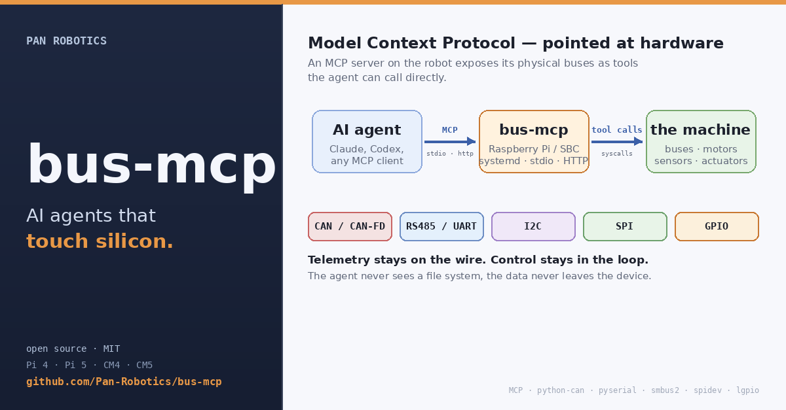

PAN ROBOTICS
bus-mcp
AI agents that touch silicon.
A Model Context Protocol server that runs on a Raspberry Pi (or any Linux SBC) and exposes the platform's actual hardware buses — CAN, RS485, UART, I2C, SPI, GPIO — as tools an AI agent can call directly. Same protocol your coding assistant uses to read source files; pointed at silicon instead.

{kind=link}
What it unlocks
- Motor drives you talk to in plain English. The agent inside the box reads error counters, retunes the bitrate, replays a move — no scope, no test fixture.
- PID loops tuned by symptom. The agent reads encoders over RS485, walks Kp / Ki up and down, captures the response.
- Drones, AGVs, and ROVs that report their own diagnostics in plain language because the agent has live access to every protocol on board.
- Companion robots where the LLM talking to the human is the same one driving the limbs.
Install on a Pi
git clone https://github.com/Pan-Robotics/bus-mcp.git cd bus-mcp ./packaging/install.sh --allow-write
Runs on Pi 4 / 5 / CM4 / CM5 today. MIT licensed. Idempotent installer wires
bus-mcp.service on the Pi and prints the claude mcp add
line for your hostname.